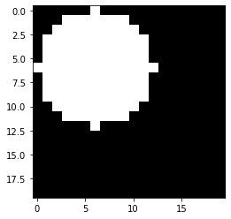
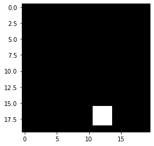

Exercício 2
Exercício 2¶
Um dos experimentos feitos com o perceptron de Rosenblatt consistia na classificação de caracteres. Um caractere era exposto na frente de uma matriz de sensores, que digitalizava a imagem e os elementos dessa matriz eram utilizados como entradas do perceptron, conforme mostrado na fotografia abaixo:

A ideia consistia em alimentar diversos perceptrons com essas entradas, que funcionariam em paralelo, de forma independente uns dos outros. Cada um era treinado para classificar um determinado caractere, fornecendo saída igual a 1 no caso da detecção do caractere em questão ou -1, no caso da detecção de qualquer outro caractere. Assim, era possível obter uma estrutura com várias saídas, cada uma representando o reconhecimento de um determinado caractere.
Neste exercício, você vai trabalhar em uma aplicação semelhante, porém simplificada: um classificador binário usando o perceptron de Rosenblatt para classificar imagens de círculos ou quadrados.
Antes de começar a trabalhar no código, certifique-se de ter baixado o arquivo CSV com os dados do repositório de materiais.
Para carregar o arquivo CSV e processar os dados, você pode usar a biblioteca Pandas. Após a instalação da biblioteca e o download do arquivo CSV, é possível carregar os dados com os seguintes comandos:
import pandas as pd
data_df = pd.read_csv("circles_and_squares.csv")
Com esses comandos, você vai criar um DataFrame do Pandas chamado data_df contendo os dados do arquivo CSV. Para ver algumas linhas do DataFrame, você pode usar o método .head():
data_df.head()
| 0 | 1 | 2 | 3 | 4 | 5 | 6 | 7 | 8 | 9 | ... | 391 | 392 | 393 | 394 | 395 | 396 | 397 | 398 | 399 | 400 | |
|---|---|---|---|---|---|---|---|---|---|---|---|---|---|---|---|---|---|---|---|---|---|
| 0 | 0.0 | 0.0 | 0.0 | 0.0 | 0.0 | 0.0 | 1.0 | 0.0 | 0.0 | 0.0 | ... | 0.0 | 0.0 | 0.0 | 0.0 | 0.0 | 0.0 | 0.0 | 0.0 | 0.0 | -1.0 |
| 1 | 0.0 | 0.0 | 0.0 | 0.0 | 0.0 | 0.0 | 0.0 | 0.0 | 0.0 | 0.0 | ... | 0.0 | 0.0 | 0.0 | 0.0 | 0.0 | 0.0 | 0.0 | 0.0 | 0.0 | -1.0 |
| 2 | 0.0 | 0.0 | 0.0 | 0.0 | 0.0 | 0.0 | 0.0 | 0.0 | 0.0 | 0.0 | ... | 0.0 | 0.0 | 0.0 | 0.0 | 0.0 | 0.0 | 0.0 | 0.0 | 0.0 | -1.0 |
| 3 | 0.0 | 0.0 | 0.0 | 0.0 | 0.0 | 0.0 | 0.0 | 0.0 | 0.0 | 0.0 | ... | 0.0 | 0.0 | 0.0 | 0.0 | 0.0 | 0.0 | 0.0 | 0.0 | 0.0 | -1.0 |
| 4 | 0.0 | 0.0 | 0.0 | 0.0 | 0.0 | 0.0 | 0.0 | 0.0 | 0.0 | 0.0 | ... | 0.0 | 0.0 | 0.0 | 0.0 | 0.0 | 0.0 | 0.0 | 0.0 | 0.0 | 1.0 |
5 rows × 401 columns
É possível converter o DataFrame em um array NumPy usando o método .to_numpy():
data = data_df.to_numpy()
data_df.shape
(1000, 401)
A matriz de dados tem 1000 linhas e 401 colunas. Cada linha se refere a um exemplo no banco de dados. As 400 primeiras colunas se referem aos elementos de uma matriz 20x20 com os dados referentes à digitalização de uma imagem de um círculo ou de um quadrado. A última coluna é um rótulo igual a -1 ou 1 indicando se a imagem se refere a um círculo ou a um quadrado.
Você pode visualizar uma imagem, usando o método .reshape() para reorganizar os 400 coeficientes em uma matriz 20x20 e a função imshow() para exibí-la. Por exemplo, para exibir a imagem referente à primeira linha da matriz:
import matplotlib.pyplot as plt
img = data[0, :-1].reshape((20,20))
plt.imshow(img, cmap='gray')
<matplotlib.image.AxesImage at 0x7f94a9c56b80>

O rótulo referente à imagem pode ser obtido com o elemento da última coluna:
data[0, 400]
-1.0
Como você pode observar, o rótulo igual a -1 é usado para identificar os círculos. Além disso, vale notar também que a resolução de 20x20 considerada na digitalização da figura do círculo causa uma distorção considerável. No entanto, vamos utilizar essa resolução baixa para reduzir a dimensionalidade do problema e tornar o treinamento mais rápido.
A quinta linha da matriz (índice 4) representa um quadrado:
img = data[4, :-1].reshape((20,20))
print(data[4, -1])
plt.imshow(img, cmap='gray')
1.0
<matplotlib.image.AxesImage at 0x7f94a9b42790>

No exercício, você vai utilizar as 800 primeiras linhas do banco de dados para fazer o treinamento do perceptron, ajustando os valores dos pesos de forma iterativa e as 200 linhas finais para avaliar o desempenho do seu modelo na classificação de círculos e quadrados. Dessa forma, você pode separar os dados em uma matriz Xd para o treinamento e Xd_test para o teste:
Xd = data[:800, :]
Xd_test = data[800:, :]
Você deve implementar uma função para treinar o perceptron de Rosenblatt de forma iterativa, dados a matriz Xd, um passo de adaptação eta, o número de épocas Ne e o tamanho do mini-batch Nb. Após o treinamento, avalie o seu modelo com os dados dos conjuntos de treinamento e de teste, medindo a acurácia do classificador para ambos os casos. A escolha desses hiperparâmetros fica a seu critério, buscando obter um bom desempenho com os dados de teste.
Ao final do exercício, você deverá entregar:
Os códigos utilizados para treinar o modelo e avaliá-lo com os conjuntos de treinamento e de teste;
O valor obtido para a acurácia considerando os dados de teste Esse valor será utilizado para fazer um ranking dos melhores modelos.
A sugestão é que o relatório seja elaborado utilizando um Jupyter Notebook e a linguagem Python, já que essas são as ferramentas que estamos utilizando neste bloco do curso. No entanto, isso não é obrigatório e você pode usar outra linguagem de programação, caso queira.